來自台灣的青少年行動者。從 2023 年開始發起「不落蒂聯盟」，後來成為教育部 K-12 教育署兒少代表、宜蘭縣兒童及少年諮詢代表，2026 年入選 HundrED Youth Ambassador。我相信只要願意持續做，小孩子也能真的改變世界。
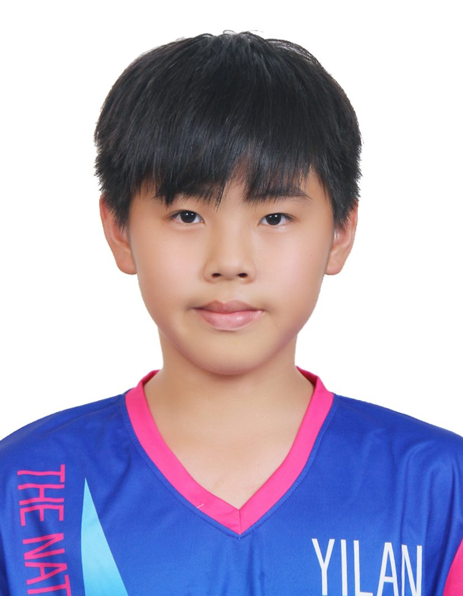
吳昊翰 Hank Wu國小六年級的時候，我因為學長姐的行動開始關注菸蒂對環境的影響，才發現一根菸蒂就有 4000 多種有毒物質，還能汙染 500 公升的水。2023 年 8 月，我找了 5 個朋友一起開始蹲下來撿菸蒂，成立了「不落蒂聯盟」。
一開始，我們的行動常常被大人質疑「小孩子做環保是不是在演戲」，甚至有場地因為覺得菸蒂主題太負面而臨時取消我們的活動。但我們選擇把憤怒變成動力：找更大的場地、準備更完整的資料，最後把原本 150 人的參與規模翻倍到 300 人以上。
三年過去，這件事從街頭走進了立法院、走上總統府旁的海洋政策發布會，也走向了國際——現在的不落蒂聯盟已經跟加拿大、日本、荷蘭的夥伴一起合作。而我，也從那個蹲在路邊撿菸蒂的六年級生，變成了在國際舞台上分享行動經驗的青年代表。
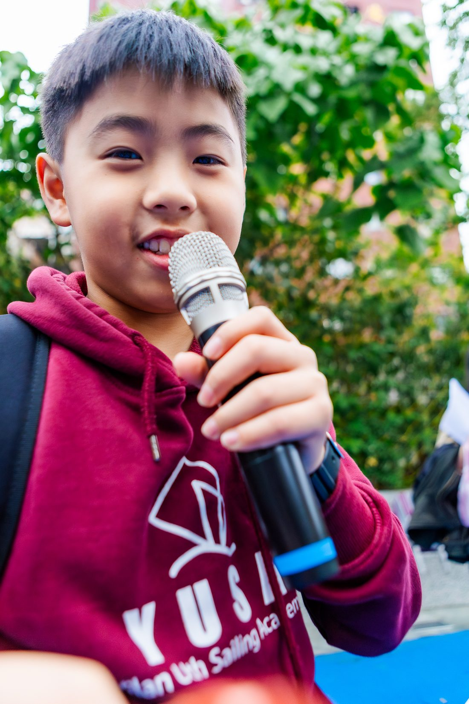
Pan、Sherry、Woody、Lucy、David、Mike，還有一路陪我們走過每個難關的指導老師 Bruce。
金車教育基金會給我們鼓勵；荒野保護協會提供發聲的舞台；台師大薛曉華教授給予環境教育上的建議；立法委員林月琴、張雅玲聽見我們的政策想法；海洋委員會與環境部給我們站上國家層級的機會。
加拿大 Buttwatch、日本新溫泉町夢丘中學、荷蘭 No Plastic Filter 等國際夥伴，一起把台灣的行動經驗帶向世界。
從學方位定向、搭帳棚到營火晚會，童軍教我的事，後來都用在帶領不落蒂聯盟上。
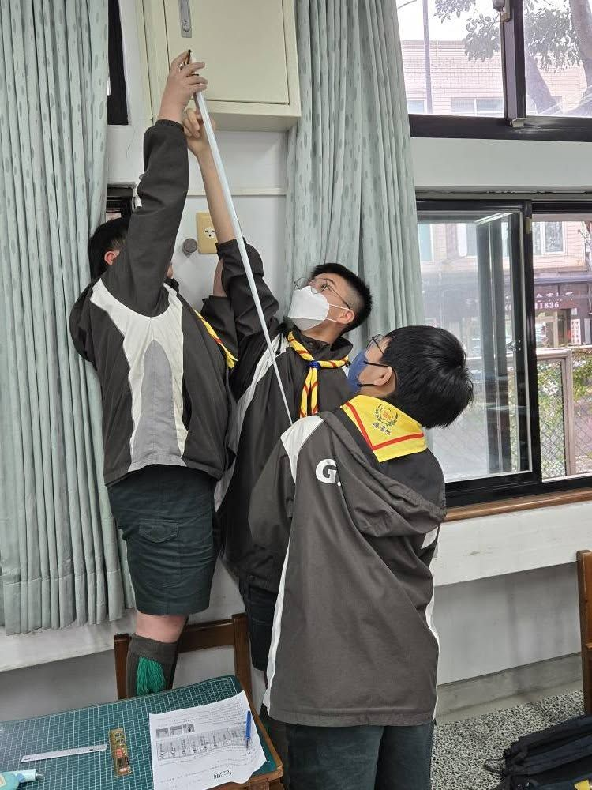
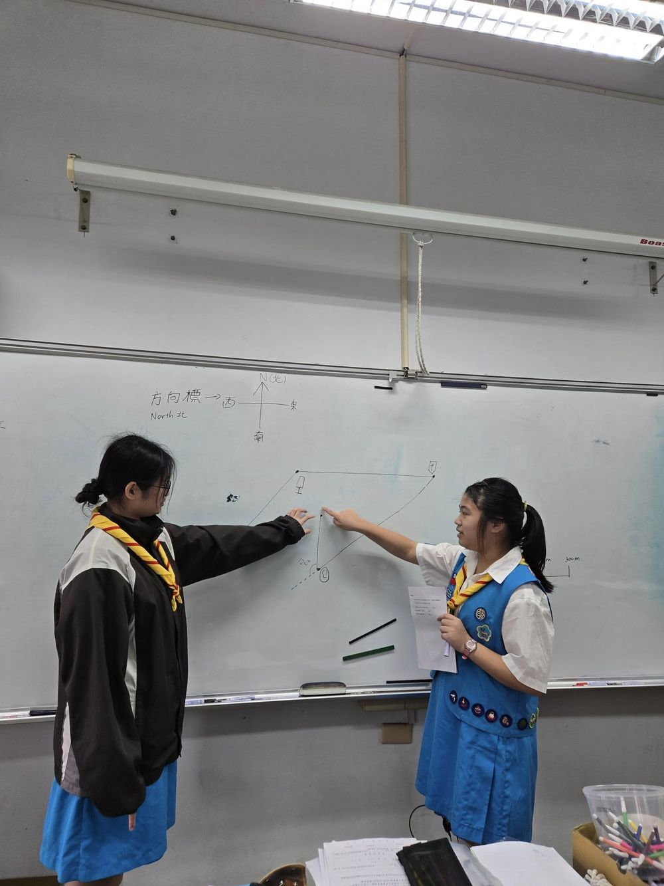
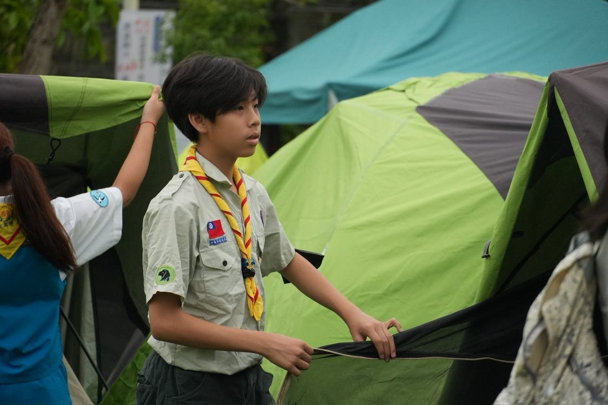
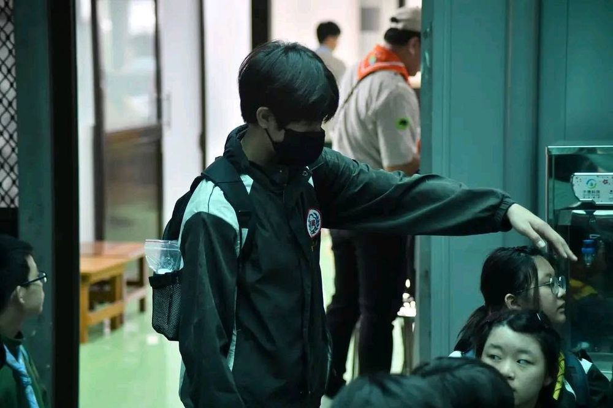
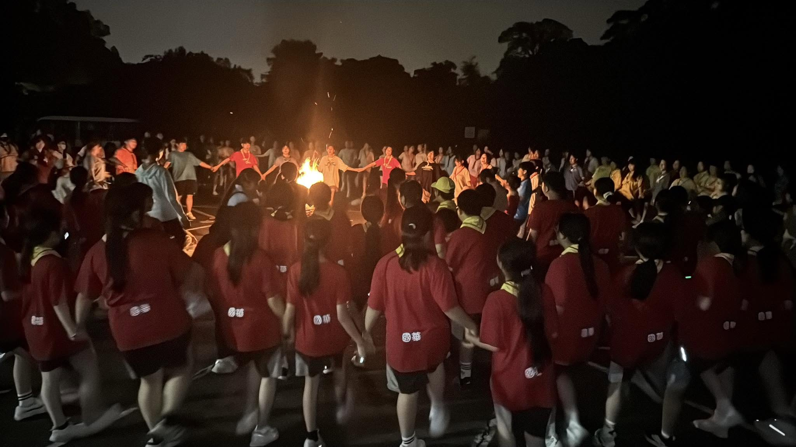
2026 年，我加入了一支由科學家與公視《下課花路米》拍攝團隊組成的考察隊，前往北極圈進行為期三週的微塑膠研究，全程拍成 5 集電視特輯。
研究方法：我們在斯瓦爾巴群島（Svalbard）周邊的冰河融水、永凍土與海域採集樣本，回到考察站以顯微分析比對聚合物光譜，鑑定樣本中的塑膠微粒種類——包括醋酸二烯酯聚合物（用於容器與包裝材料）、聚乙烯酸酯聚合物、PLA（聚乳酸）以及 BBP 塑化劑等，藉此了解人造塑膠已經滲透到地球最偏遠角落的程度。
成果發表：回國後，我受邀在國立海洋科技博物館以「從北極微塑膠看全球暖化影響——青少年視角」為題公開演講，把在北極採集到的第一手數據，轉譯成一般民眾也能理解的環境教育內容。
這趟考察也讓我更確定：菸蒂裡的塑膠濾嘴，最終會透過同樣的路徑——融水、河流、洋流——污染到地球最遙遠的角落。永凍土裡驗出的塑膠微粒，跟街頭菸蒂濾嘴的成分同樣是人造聚合物，這也是「不落蒂聯盟」持續行動、而不只是停留在撿菸蒂層次的原因之一。
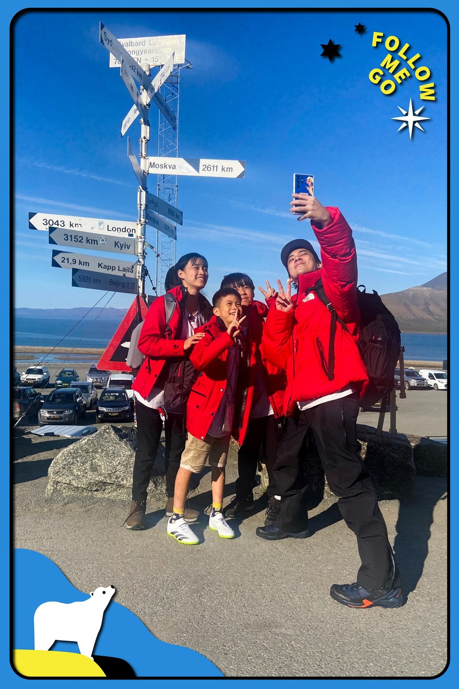
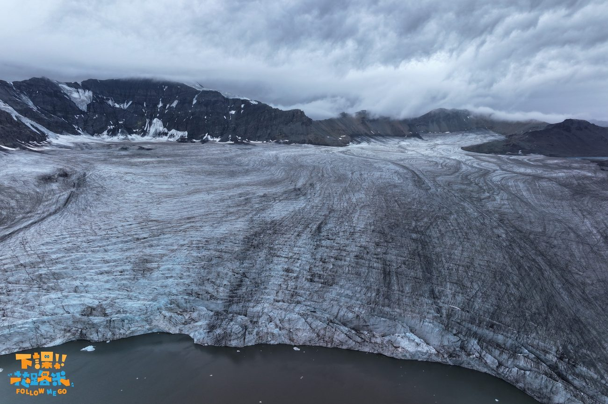
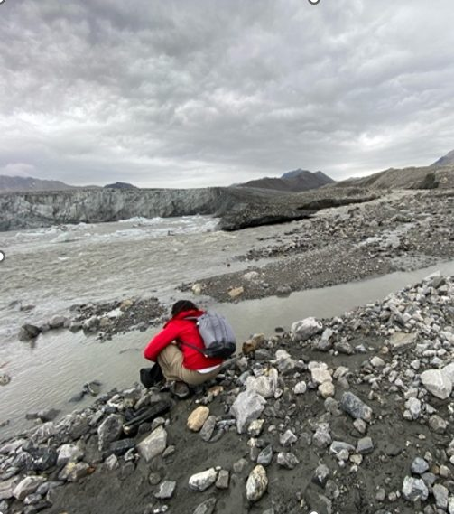
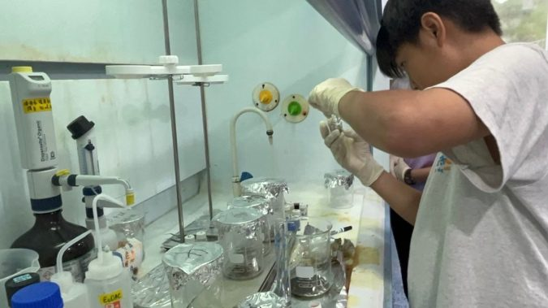
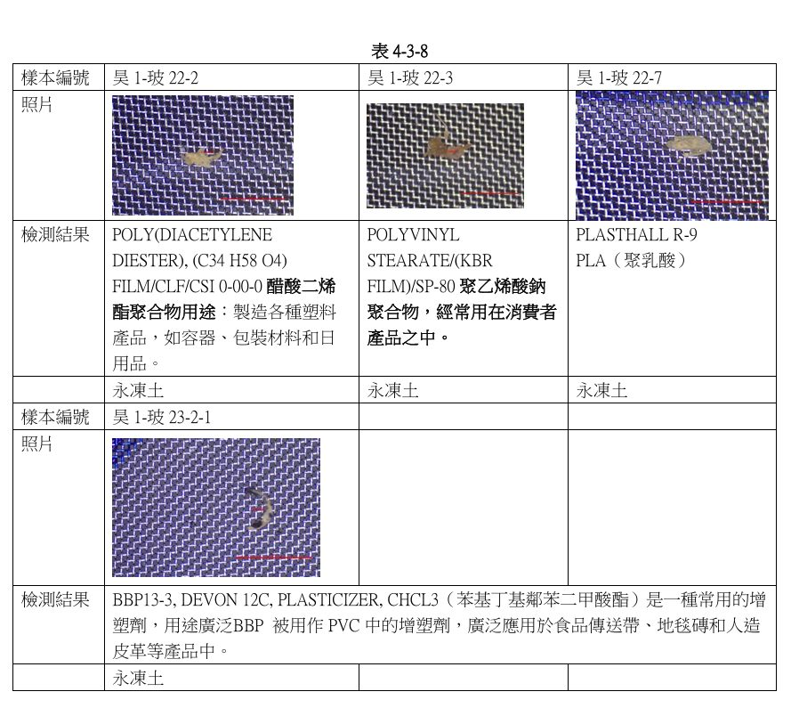
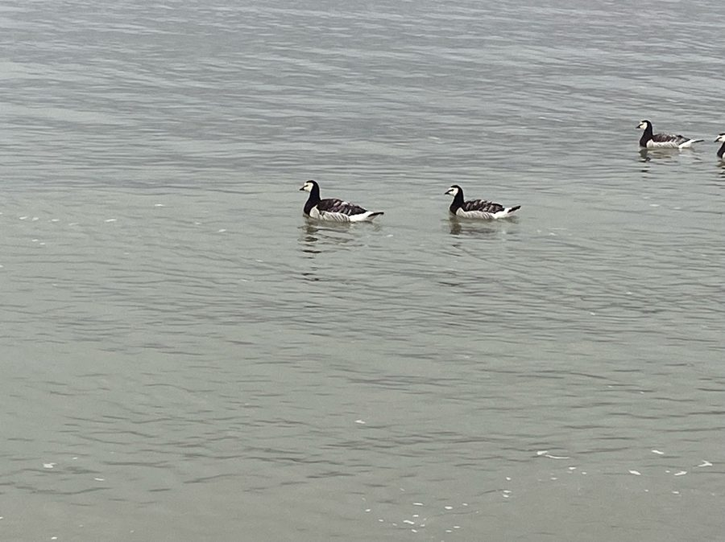
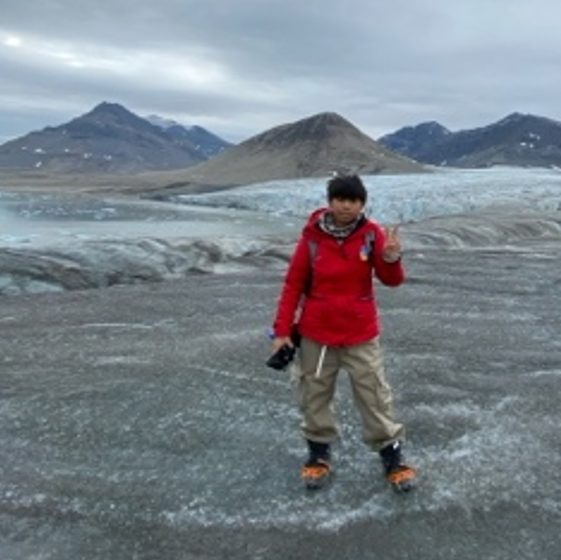
不管你是老師、記者、其他青年行動者，還是剛好看到這個網站的路人，都歡迎跟我聯絡。